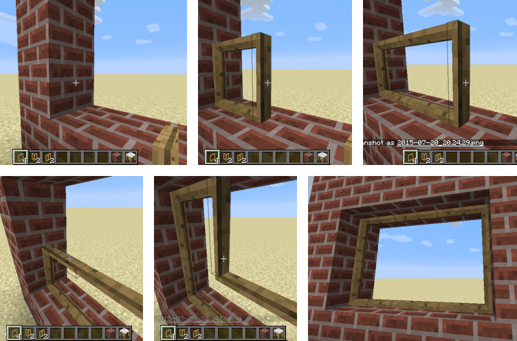
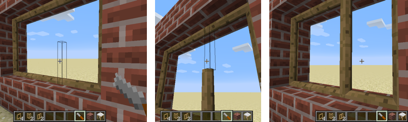
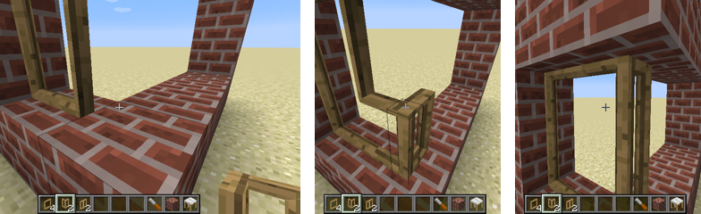
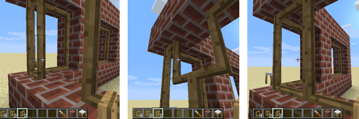
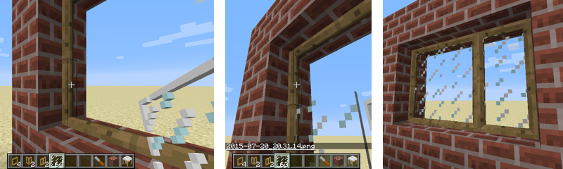

Window Frames
These blocks let you create nice-looking frames for your windows.
Contents
Placing Window Frames
The easiest way to place a window frame is to click on the side of
another block, and the frame will be oriented perpendicular to it. You
can also click on the top of a block near the edge, and the frame will
be oriented parallel to that edge.
Adjacent window frames connect to each other. Once you have placed the
first frame, clicking on the edge of an existing frame will give the
new frame the same orientation.

To create a division between two frames, right-click on the side of a frame with a Chisel to disable the connection. Right-click with the chisel again to reconnect them.

The Window Corner
block is used to create a window that goes around a corner. The best
way to place them is to click at the bottom, near where you want the
inside of the corner to be, then build upwards by clicking on the top
of the previous corner frame to give them all the same orientation.

The Window Mullion
block incorporates a permanent vertical framing piece in the centre,
allowing a window to be divided in the middle of a block space.

Glazing
Window frames can be glazed by right-clicking with a vanilla glass
pane, either plain or stained. To remove the glazing, right-click on
the pane with a Chisel.
